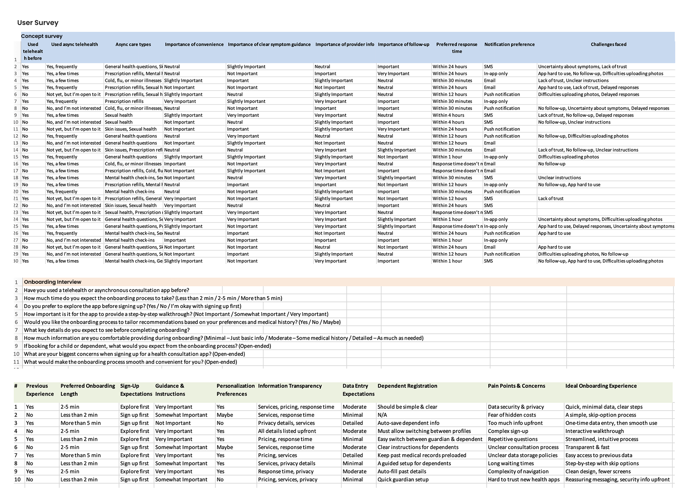
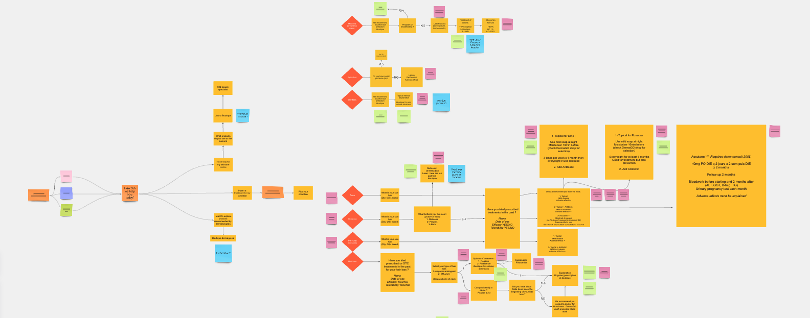
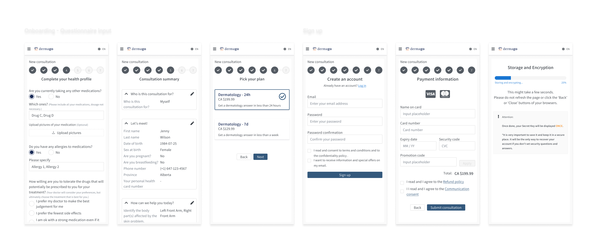

How I tackled and designed Patient Onboarding to boost engagement and minimize friction in Asynchronous Dermatology app
Role: UX Designer
Time: 2022 / 2023

Onboarding serves as the first touchpoint between users and the app, shaping their initial experience. A well-designed onboarding process introduces core features, drives user activation, and maximizes retention. These elements play a crucial role in influencing the overall user journey and long-term engagement with the product.
Overview
My approach to end-to-end design for the customer onboarding process of an asynchronous dermatology app focuses on addressing key UX challenges to enhance user engagement and streamline the consultation experience.
Key outcomes
- Improved design consistency and efficiency, reducing redandant components and streamlining UI updates
- Accelerated design and development workflows, cutting production time and improving collaboration
- Validated system adoption through team training and integration into multiple projects
- Established a scalable, maintainable design system, ensuring long-term flexibility and growth
- Created a living documentation framework, aligning design and development teams for future scalability
Table Of Content
- Introduction
- Process
- Phase 0. Discovery project
- Phase 1. Ideation
- Phase 2. Design
- Phase 3. Test, Iteration
- Results
- Key learnings
Introduction
Dermago is an asynchronous dermatology app that enables patients to consult with dermatologists by submitting photos of their skin conditions, providing descriptions, and sending requests for review. To facilitate this process, patients must complete an onboarding flow that gathers essential information through a series of questions. If not designed thoughtfully, this step can lead to frustration and increased drop-off rates, impacting user engagement and overall experience.
Process
Phase 0. Discovery project
First, I looked up some insight about potential user behaviors and expectations on telehealth platform which led to some assumptions. Next, to verify it, I carried out the concept user research using user survey, then confident to build the user personas for the product.
- Industry research
-
- User Behavior in Digital Healthcare
Patients often prefer minimal interaction in health app, especially during the initial stages. - Complexity of Dermatological Care
Asking for too much information upfront can frustrate users who might not yet understand why it is necessary. - Engagement Patterns
If onboarding is not designed to be quick and relevant, users are less likely to engage with the app’s core functions, such as submitting their first consultation request. - Personalization Trends
Personalization has proven to be a key factor in increasing user satisfaction and engagement, especially in healthcare. - Asynchronous Care Research
Learning that clear communication and patient education during onboarding were critical to success.
- User Behavior in Digital Healthcare
- User research
-

Fig.1 - Image 11 - Stakeholder interviews
-

Fig.1 - Image 11 - Key takeaways
-
Research confirms that patients prefer a streamlined onboarding experience with minimal friction. Balancing dermatological assessment complexity with usability is key to preventing frustration. Personalization improves engagement, while clear communication and education build trust. A well-structured onboarding flow is essential for better user adoption and satisfaction.
- User personas
-
Fig.1 - Image 11
Conducting interviews sessions with Doctors, PM, Product team provided me with data and insights from the business's point of view. The session helped me uncover and organize the context, identify the business goals.
Problem statement
Patients using digital healthcare apps need a way to quickly access care with minimal friction because lengthy forms and complex workflows can lead to frustration and drop-offs, reducing engagement with essential features like submitting a consultation request.
Phase 1. Ideation
- Brainstorm using card sorting
-
To ensure an intuitive and engaging onboarding experience, I began by mapping out the user journey through a user story and user flow diagram. This approach helped translate insights into actionable solutions and provided a clear, understandable document for discussion with stakeholders.

Fig.1 - User onboarding flow - Define user onboarding flow
-

Fig.1 - User onboarding flow - Validate design concept
-

Fig.1 - User onboarding flow - New walthrough screens
- Make the consultation types more standout
- Move sign-up step toward the end of the process
- Keep design flexible for feature added later on: Follow-up Consultation
How Might We
How might we make the onboarding process seamless and intuitive to reduce friction for first-time users so they will engage with the app deeper and longer?
Based on the instructive opinion from the ideation session with the team, I defined a roadmap of UX improvements including:
Phase 2. Design
- Design challenge 1 - Educate users about what's the app offers to reduce cognitive load
-
Users who are unfamiliar with asynchronous heal care apps often feel uncertain about the app’s full capabilities. Without proper guidance or an introduction to key features, user may feel overwhelmed or miss out on valuable services, leading to lower engagement and even abandonment.
To address this, I designed a guided walkthrough that introduces new users to the app’s core features during the onboarding process. This walkthrough aimed to educate users upfront about what the app offers before they began exploring it independently. The walkthrough included a brief, straight toward overview of the app’s main services, such as how to submit skin consultation, receive expert advice, and manage follow-up consultations. By simplifying the explanation with visual and description, I reduced confusion and built confidence in the process.

Fig.1 - Breaking the onboarding into manageable steps, users feel less overwhelmed and are more likely to complete the process. - Design challenge 2 - Allow user select the appropriate Consultation Type
-
Users needed to choose whether the consultation was for themselves, their child, or someone in their care. The app had to handle these different scenarios smoothly without confusing users.
I designed a decision-making interface early in the onboarding process where users could easily select the type of consultation they needed. Each option was accompanied by clear, concise descriptions and visual cues (icons and short text) to ensure that users could make an informed choice.
The onboarding flow dynamically adjusted based on the user’s choice, offering tailored questions and information for each case.

Fig.1 - The onboarding flow dynamically adjusted based on the user’s choice, offering tailored questions and information for each case. - Design challenge 3 - Making the process user friendly
-
Digital healthcare onboarding require detailed medical information, but asking for too much detail upfront can overwhelm users.
Display essential information once at a time. Grouping them into relevant categories at each step to reduce users' cognitive load.

Fig.1 - Breaking the onboarding into manageable steps, users feel less overwhelmed and are more likely to complete the process. - Design challenge 4 - Allow users go through onboarding without Sign-Up Interruption
-
Many users become frustrated when healthcare apps force them to sign in or create an account before they can explore the app, or understand its value. This often leads to drop-offs during the onboarding process.
I designed the onboarding flow to defer sign-in until the end of the process. Users could go through the consultation selection, answer medical questionnaire and treatment preference, and get a feel for the app’s functionality before being prompted to sign in or create an account.
Fig.1 - Delaying the sign-in request until the user was ready to submit their first consultation helps reduce friction and allowe users to engage with the app more freely. This approach built trust and helped users understand the app’s value before committing to registration. By delaying the sign-in request until the user was ready to submit their first consultation, it reduced friction and allowed users to engage with the app more freely. This approach built trust and helped users understand the app’s value before committing to registration.
Phase 3. Test, Iteration
- Usability Testing
-
Using clickable prototypes, I conducted various validation sessions with stakeholders, and 10 1st-time users.
The feedback was expected to provide specific insights towards:
- Learning that how users like/dislike about the app, and what would entice them to eventually submit a consultation request.
- Identifying any particular issues that might discourage users from using the app.
- Any usability issues the app might have.
Findings
- Clear Step-by-Step Progression helps users understand where they are in the process.
- Concise Question Wording, Logical Information Flow, however, the forms contain a lot of input fields causes busy screen, led to users' frustration.
- Some usability issues could be improved for better visual hierarchy and readability.
Fig.1 - User testing findings used The rainbow spreadsheet framework - Design Improvement
-
Visual Hierarchy and Readability
- Updated the color system to improved the contrast between text fields and background for better readability.
- Redesign the header section, particularly the progress indicator to help the layout got a minimal look.

Fig.1 - The preloaded data feature not only streamlined the follow-up process but also contributed to an overall sense of continuity in care, allowing patients to feel that their medical journey was being manage seamlessly and with minimal effort on their part. Cognitive Load & Information Density
- The forms contain a lot of input fields on a single screen. Breaking them down into smaller sections by adding more space in between might reduce overwhelm.
- Using progressive disclosure (showing additional fields only when relevant).

Fig.1 - The preloaded data feature not only streamlined the follow-up process but also contributed to an overall sense of continuity in care, allowing patients to feel that their medical journey was being manage seamlessly and with minimal effort on their part. - Results
-

Fig.1 - The preloaded data feature not only streamlined the follow-up process but also contributed to an overall sense of continuity in care, allowing patients to feel that their medical journey was being manage seamlessly and with minimal effort on their part. -

Fig.1 - The preloaded data feature not only streamlined the follow-up process but also contributed to an overall sense of continuity in care, allowing patients to feel that their medical journey was being manage seamlessly and with minimal effort on their part. 
Fig.1 - The preloaded data feature not only streamlined the follow-up process but also contributed to an overall sense of continuity in care, allowing patients to feel that their medical journey was being manage seamlessly and with minimal effort on their part. - Outcomes
- Completion Rate Increased by 22% – Breaking long forms into smaller chunks and streamlining inputs reduced drop-offs.
- Higher user satisfaction – Clearer UI, improved navigation, and better form structure resulted in 85% positive feedback.
- Increased confidence in submission – The summary step and confirmation message reassured 90% of users.
After implementing UX improvements based on initial user feedback, a second round of user testing was conducted with 5 users to validate the changes. Here are the key results:
Key Learnings
- Validation Through Iteration is Essential
Initial assumptions about user behavior can be misleading. Stakeholder reviews, internal usability testing, and real user interviews helped refine the onboarding process, making it more intuitive and user-friendly. - Transparency Builds Trust
Users hesitate to explore more on apps when display information are unclear. Providing clear explanations upfront increased confidence and user commitment.